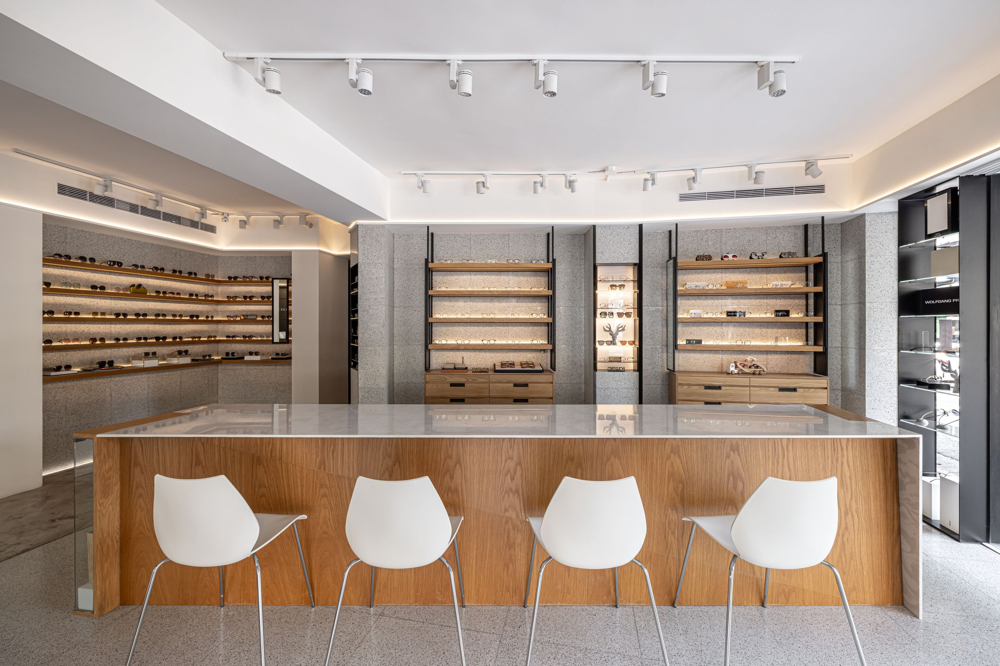
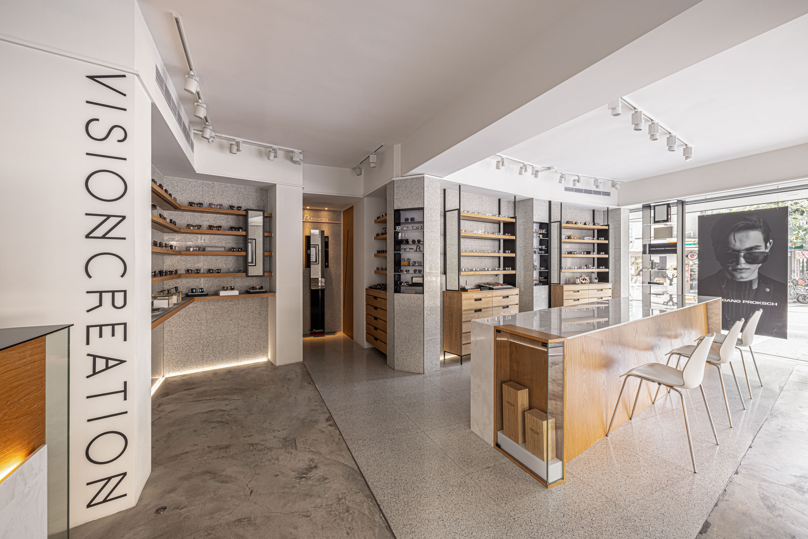
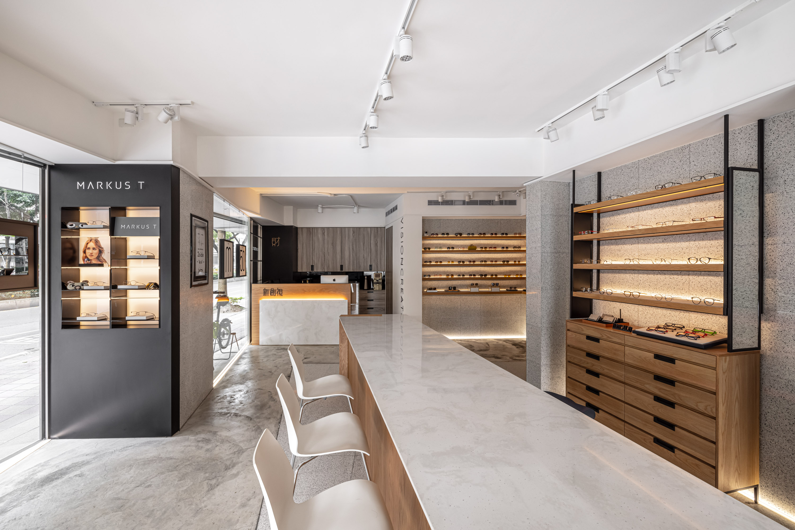
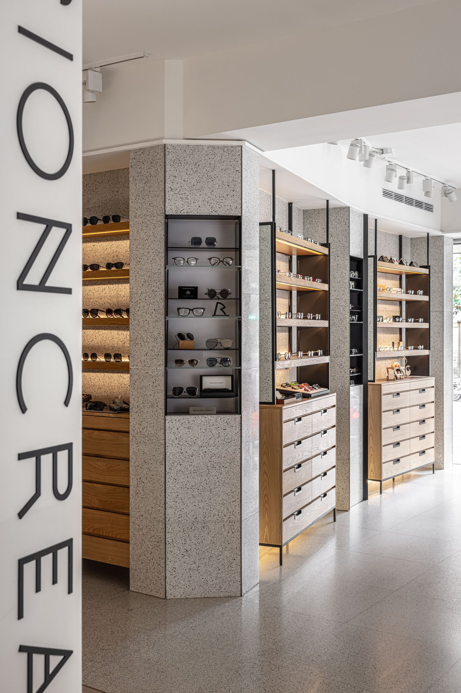
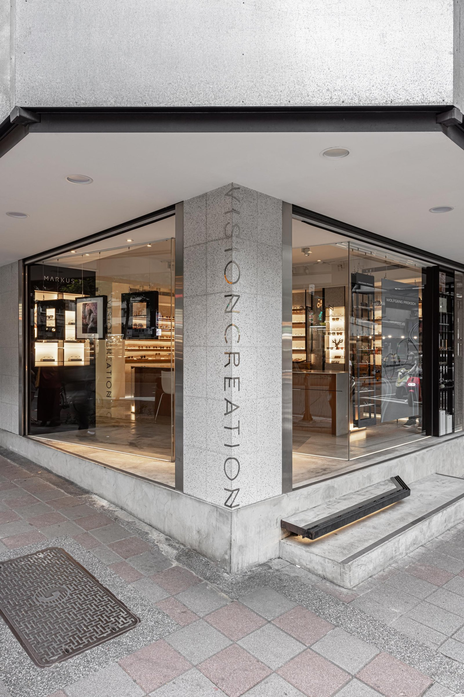
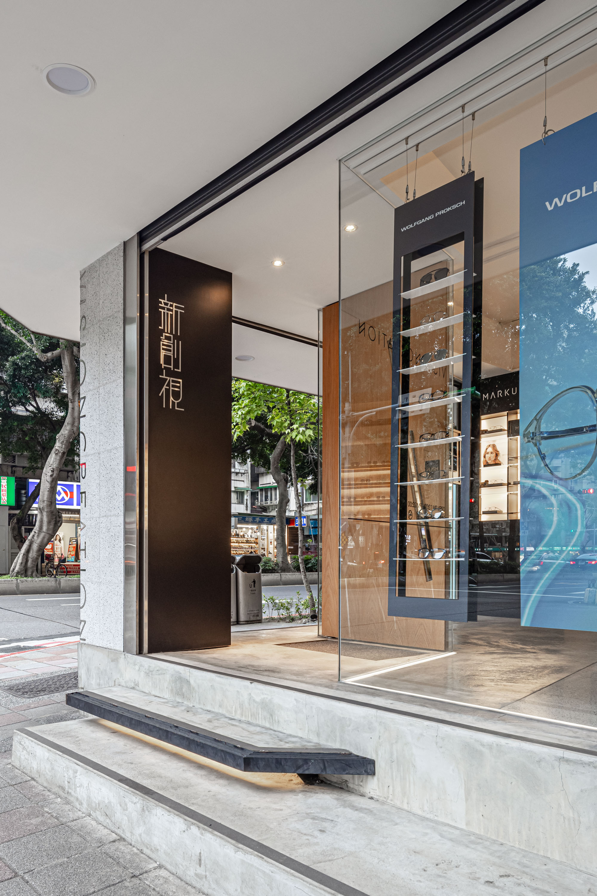
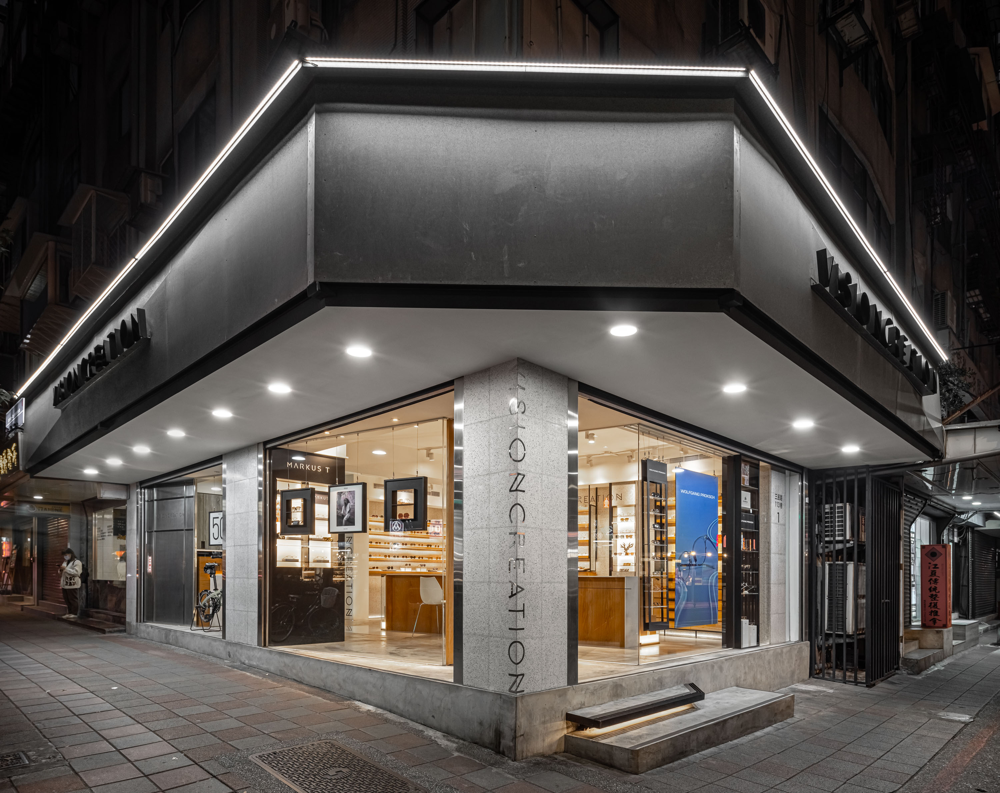
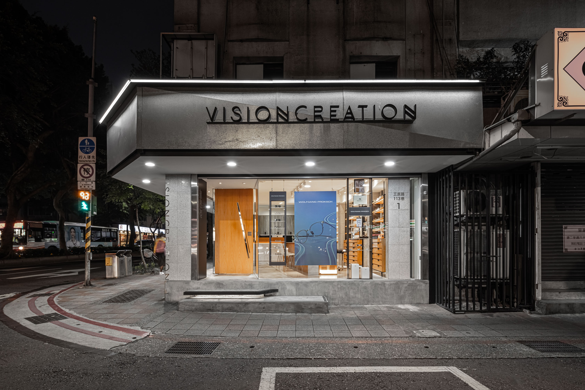
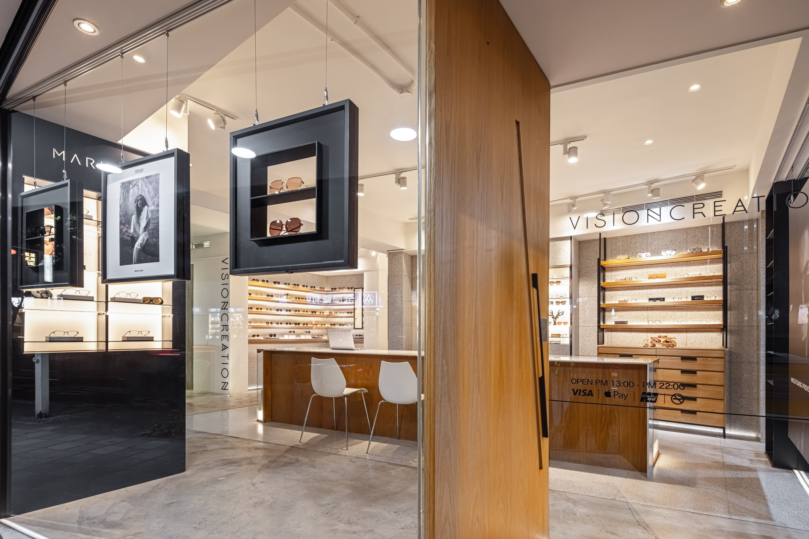
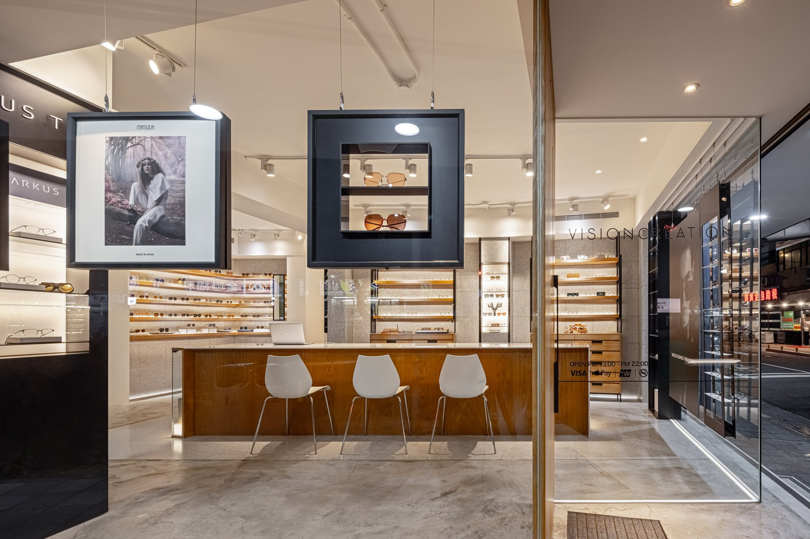

讓眼鏡成為唯一的主角。
Making the eyewear the only subject.


01
眼鏡的展示，最常見的錯誤是把商品放進一個太有自己主張的空間。新創視的選材從這個問題出發：水泥粉光、台灣製水磨石、原色橡木皮，三種材質有質感，但沒有聲音。展示邏輯從傳統櫃檯轉向開放式中島，銷售變成一件可以移動、可以靠近的事。
The most common mistake in eyewear retail is placing the product in a space with too strong a voice. New Vision's materials begin from this problem: cement finish, Taiwanese terrazzo, natural oak veneer — texture without personality. Display logic shifts from traditional counters to open islands, making sales something that can move and approach.


02
地面預埋的線性光源，沿著空間的輪廓走。這條光不是裝飾，是建築線條的強調——讓空間的邊界在視線高度之外也能被感知。光源藏起來，效果才能站出來。
In-floor linear light traces the spatial outline. This line is not decoration — it emphasizes architectural edges, making boundaries perceptible beyond eye level. The source hides so the effect can stand.


03
開放式中島取代傳統玻璃櫃台，改變的不只是陳列方式，而是銷售關係。當商品可以被拿起、被直接觸碰，店員與客人之間的距離從「隔著玻璃」變成「站在同一側」。
Open island units replace glass counters, changing not just display but the sales relationship. When products can be picked up and touched directly, the distance between staff and customer shifts from across the glass to standing on the same side.


04
水泥粉光、水磨石、橡木皮——三種選材的共同邏輯是「有性格但不搶話」。它們各自有肌理，但放在一起不互相競爭，讓視線回到商品。選材不是風格決定，是展示策略的延伸。
Cement finish, terrazzo, oak veneer — three materials sharing one logic: character without volume. Each has texture, but together they don't compete, returning the eye to the product. Material selection is not style; it is display strategy.


05
眼鏡的試戴是一個需要鏡子和光線同時配合的行為。中島旁的立鏡角度經過計算，確保試戴時臉部的光線均勻、無陰影。這個細節不會被客人注意到，但他們會覺得「在這裡試戴的時候，鏡子裡的自己看起來比較好看」——這就夠了。
Trying on eyewear requires mirror and light to work together. The standing mirror beside the island is angled so facial lighting is even and shadowless during try-on. Customers will not notice this detail, but they will feel that the person in the mirror looks better here — that is enough.
All Photos